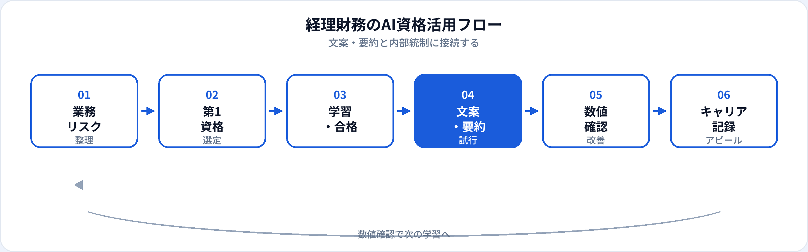

経理・財務・管理会計・FP&Aなど、数字と説明責任がセットの職種では、生成AIの使い方に特に慎重さが求められます。AIはレポート要約の文案や社内説明資料の骨子づくりには有効ですが、決算数値・仕訳データをそのまま入力する運用はリスクが高いです。本記事では、経理・財務が取るべきAI資格を比較し、安全な活用範囲とキャリアまで2026年6月時点で整理します。事務職向け・金融業界向け・金融×DSキャリアの記事も併せて参照してください。
経理・財務にAI資格が効く理由
経理・財務は「正確な数字」と「わかりやすい説明」の両方が求められます。資格学習は、生成AIを文案・構成の支援に限定し、数値確定と監査対応は人間・既存システムが担う——という線引きを、チーム内で共有するための共通言語になります。
説明業務の効率化
月次報告・予実差異・部門向け説明の文案・構成案を速く作り、数字の検証と調整に時間を割ける。
内部統制・情報管理
何をAIに渡してよいか、ログ・承認フローとセットで整理。生成AIパスポートの個人情報・情報管理章が実務と直結する。
FinTech・自動化への橋渡し
OCR・RPA・予測モデル導入時に、経理担当がリスク説明役になる。G検定・DS検定はここを補強する。
試験対策はこちら
業務タイプと資格の効き方
| 業務領域 | AI資格の主な役割 | 第1候補の目安 |
|---|---|---|
| 日常経理（AP/AR・仕訳） | 問合せ返信文案、手順書・マニュアル下書き | 生成AIパスポート（数値は入力しない） |
| 財務会計・決算 | 開示文案の構成案、社内説明資料の骨子 | 生成AIパスポート ＋ 内部統制の徹底 |
| 管理会計・FP&A | 予実差異の説明文案、シナリオ整理のたたき台 | 生成AIパスポート → DS検定（任意） |
| 税務・監査対応 | 資料リスト整理、説明メモの下書き | 生成AIパスポート（法判断は専門家） |
| FinTech・経理DX | ツール選定、リスク説明、利用ルール整備 | 生成AIパスポート → G検定 / ITパスポート |
業務別：生成AIの活用シーン
| 業務 | 生成AIの使い方（例） | 資格で学ぶ関連知識 |
|---|---|---|
| 月次レポート説明 | 増減要因の説明文案、部門向けメール骨子 | 数値はERP/Excelから人が転記・確認 |
| 予実・差異分析 | 要因カテゴリの整理、説明段落の下書き | 因果の断定はデータと突合 |
| 経費・精算問合せ | 規程に基づく回答案、FAQ更新案 | 個別案件・例外は人が判断 |
| 手順書・統制文書 | As-Is/To-Beの文章化、チェックリスト案 | 監査要件は専門家確認 |
| 経営報告資料 | スライド構成、Executive Summary文案 | 未公開数値は入力しない |
| FinTech導入検討 | 比較観点リスト、リスク記載のたたき台 | AIの限界・説明責任（G検定も有効） |
仕訳の自動仕分け・税務判断は生成AIの得意領域ではありません。RPA・会計ソフト・税理士判断と役割分担してください。
おすすめ資格の比較
| 資格 | 経理・財務との相性 | 学習時間目安 | 向いている担当 |
|---|---|---|---|
| 生成AIパスポート | ◎ 文案・要約・情報管理に直結 | 20〜40時間 | 経理全般、社内説明・問合せ対応 |
| DS検定（リテラシー） | ○ FP&A・分析結果の読み方 | 40〜80時間 | 管理会計、予実分析、ダッシュボード利用 |
| G検定 | ○ FinTech・予測・自動化理解 | 80〜150時間 | 経理DX、AIツール選定リーダー |
| ITパスポート | ○ ERP・クラウド・セキュリティ土台 | 40〜80時間 | システム連携が多い経理 |
| 簿記・公認会計士等（参考） | ◎ 会計の専門性（AI資格とは別軸） | — | 会計判断・監査（AIは文案に限定） |
第1候補と学習順
-
第1：生成AIパスポート
文案・要約・社内説明のたたき台と、情報管理の共通言語づくり。合格後、月次報告の説明文1本から試す。
-
第2（任意）：DS検定リテラシー
FP&A、予実分析、BIダッシュボードの読解を強化したい場合。
-
第2〜3（任意）：G検定 / ITパスポート
経理DX・FinTech導入、ERP/クラウド連携をリードする場合。
| あなたの業務 | 第1候補 |
|---|---|
| 日常経理・問合せ・手順書が中心 | 生成AIパスポート |
| 予実分析・部門説明が中心 | 生成AIパスポート → DS検定 |
| 経理システム・AI-OCR導入 | 生成AIパスポート → ITパスポート → G検定 |
| 決算・開示文案の支援 | 生成AIパスポート（構成案のみ・数値は厳格管理） |
経理・財務の活用フロー

経理・財務では下書き→数値突合→承認→記録の流れを崩さないことが最重要です。AIは下書きまで、数値・仕訳・開示判断は人間と既存統制が担います。
合格後の実践（文案・要約・統制）
月次説明テンプレート
「概要・好調要因・課題・次月アクション」のプロンプトを固定。数字はERP/Excelから人が入力。
経費規程FAQ
規程条文を根拠に回答案を生成（条文自体は社内資料から引用）。例外案件はエスカレーション。
AI利用チェックリスト
入力禁止情報・承認者・ログ保管を1枚に。監査・内部統制チームと合意して運用。
経理・財務の評価はミスなく・説明できることです。効率化で空いた時間を、差異分析の深掘りと統制の精度向上に再投資してください。
経理・財務現場の注意点
| やってよいこと | 避けるべきこと |
|---|---|
| 匿名化した説明文案・構成案 | 決算数値・仕訳明細・取引先情報の入力 |
| 公開規程に基づくFAQ下書き | 税務・会計判断をAIだけで確定 |
| レポートの文章要約（数値は別途確認） | AI出力の数値を検証なしで報告 |
| FinTech比較の観点リスト | 監査証跡のないAI処理を本番に直結 |
上場企業・金融機関では、AI利用そのものが内部統制・開示の論点になり得ます。情シス・監査・法務と事前にすり合わせてください。
キャリア・転職でのアピール
現職（経理・財務のまま）
「生成AIパスポート（年月）」と、月次説明の標準化「経費FAQ整備」「AI利用チェックリスト策定」などをセットで記載。経理DXプロジェクトへの参画もアピール材料になります。
転職・キャリアチェンジ
- FP&A・ビジネスアナリスト 予実分析 ＋ 生成AIパスポート ＋ DS検定（任意）＋ 部門調整実績
- 経理DX・FinTech企画 統制理解 ＋ 生成AIパスポート ＋ IT/G検定（任意）＋ 導入実績
- データアナリスト（管理部門） 数値感度 ＋ DS検定 ＋ Excel/SQL実務（詳細）
- 金融×データ（業界転換） 経理経験 ＋ 資格 ＋ 分析学習（詳細）
資格の一般的な活かし方はAI資格はキャリアにどう役立つ？、履歴書は記載例ガイドを参照。
資格だけでは足りない点
経理・財務の評価は会計基準・内部統制・説明責任です。資格はAIリテラシーの証明になりますが、仕訳・税務・監査対応は簿記・公認会計士等の専門知識と経験が必要です。合格後は、数値を扱わない文案から小さく試し、統制とログを必ず残してください。
よくある質問
経理・財務におすすめのAI資格はどれ？
文案・要約が主なら生成AIパスポート。FP&AならDS検定、FinTechならG検定も検討。
決算数字や仕訳データをAIに入力してよい？
原則入力しない。社内規定を確認し、匿名化した文案・構成案に限定する。
生成AIパスポートだけで十分？
日常の文案・啓発が主なら十分なことが多い。分析・DXリードはDS検定やG検定で補強。
経理からFP&A・データ分析職にキャリアチェンジできる？
可能です。数値感度と統制理解は強み。資格に加え分析実務があると説得力が増します。